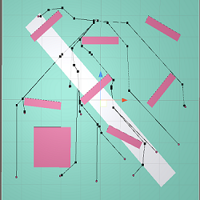
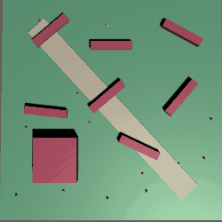
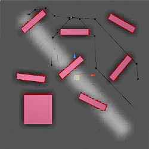

A-Star Demo - Personal Project
Unity, C#
Unity based tech demo of an A* solution utilizing a heap to efficiently generate paths, coroutines to handle unit requests, layer masks for dynamic grid generation and path weights, and Unity editor visualizations to allow designers to easily modify values.
My work on this project included:
- Dynamic grid generation, including height variation of nodes, by using layer masks and raycasting to determine height and walkability.
- Heap optimization for pathfinding, reducing path finding times from 40ms previous to Heap implementation, to between 4 and 10 ms after implementing it, allowing for more agents to pathfind at the same time.
- Path weights by using raycasts intersecting with layer masks to modify grid space cost values when the grid is generated.
- Implemented efficient path blue using a
- Visualization of paths and grid values in order to allow easy modification for testing.
- Utilized Unity event system to set up coroutines for units to help prevent suddenly efficiency drops when multiple units generate a new path.

Demo of paths generated for multiple agents.

Agents moving in action

Example of grid visualized using gizmos. Darker gray means higher cost and red means it is unwalkable.